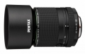
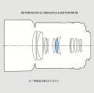

此镜头是一款最适合在旅行、趣味、家庭活动等各种户外场景下尽情拍摄，焦距相当于84.5～460mm（折合35mm胶片规格），覆盖了中长焦至超长焦范围的长焦变焦镜头。通过升级自动对焦性能，不仅可安静高速的进行自动对焦，而且还能抑制在录制影片时所产生的对焦及光圈工作的声音，从而能顺畅地跟踪焦点。另外高画质及近至0.95m拍摄距离的新开发镜头也拓展了拍摄领域。此外，采用了镜筒内嵌式构造，实现了全长仅89mm。通过便携的尺寸和防滴结构，提升了在各种环境下使用的信赖感和耐久性。
Da 55-300算是宾得改动升级最多的镜头了，先后已经有4个版本。PLM的新版镜头比此前的3款改变很大，理光几乎是重新设计了这枚新的553，各方面的性能都得到了全方位的提升。它升级了对焦系统和光学结构，增强了防滴防尘性能，同时降低了尺寸和重量，带来优秀的成像素质，并且具有可接受的价格。唯一不适合使用该镜头的用户群体，就是那些经常在暗光环境下工作的拍摄者，比如婚礼摄影师，毕竟该镜头的小光圈范围，限制了其在室内和夜晚的应用。
1、外形：轻巧结实，隐蔽性好。这枚镜头采用了收缩设计，在收纳时比前几代都节省空间，重量也比上一代减轻了一些，非常便携。而且在不带遮光罩的情况下很低调，用长焦扫街时不太会引起拍摄对象的注意。镜身上的锁定按钮，不按住它是打不开镜头的，也无法对焦。 2、对焦：进步非常明显。最令人惊喜的就是PLM版553的对焦能力，提升的确很明显，安静无声而且非常敏捷，有点像N、C、S家的现代主流镜头的感觉。看来这次理光对553的全新设计主要集中在改为后镜组对焦和采用PLM电机对焦上，收效十分明显。不过可能是受到K3机身的限制，在200-300的长焦段对一些如密集的多层树枝对焦时仍然有点犹豫。 3、成像：长焦端得到加强，广角端相对疲软，色散控制很好，“洋葱圈”还是有点儿，F8你值得拥有。试拍的主观感受是，光圈全开情况下，135-250的长焦段的画质超过心理预期，而55-100的广角端画质不及心理预期，靠近300端基本可用。而收到f8全程成像都很可靠，再收到f11以后就又不太可靠了。值得提一句的是，镜头实拍过程中感觉基本没有明显的色散。当然，这么小的光圈也的确不应该出现严重的色散。另外，实拍中遇到背景虚化区域里有亮点光斑时，放大看还是能看到一些明显的“洋葱圈”，看来非球面镜片还是起了作用的，呵呵。
1、做工：越南出品，令人担心……该镜头购买于某宝上某易姓宾得专营店，以前都一直在他家买东西的，一直没遇到过什么意外，但是这次的新镜头里有不少灰尘，肉眼可见，手电照射下更明显，还能看到内部镜片表面的一些加工细节瑕疵，令我十分郁闷。镜头外观是崭新的，卖家一贯也还是诚恳的，而且这个镜头刚上市不久，应该不是翻新之类的问题镜头，看来只能解释为越南生产厂家和运输过程中的问题。考虑到实拍中并不影响成像，也就没有再追究，但是这种制造素质实在是让人忧虑啊…… 2、操控：彻底电子化。首先要说，新镜头的变焦动作还是有点吃力的，调焦环有点紧，镜筒全身出来以后也基本没有可晃动的间隙，看来防滴做工还行，不知道会不会随着使用增加变得松垮。之后要感慨的是，该镜头不但跟以往的DA镜头一样没有光圈调整环，只能靠机身调整光圈，而且连手动对焦环也是纯电子、非机械的，机身关闭（镜头不通电）时完全不能手动对焦！！这一点很像是SONY家的E口镜头了，让人有点不习惯，估计是新的对焦系统设计需要吧，不过主观猜测可能会比以前的机械对焦镜头费电。 以下引用国外网站评测贴里的两点对镜头适用性的重要说明： *该镜头采用完全的电子控制对焦系统，在K100ds（2006年发布）之前的机型上无法实现任何对焦操作（包括手动对焦）。 **因为采用了电磁光圈系统，该镜头只有在与支持电磁光圈操控的机身配合时才能够正常收缩光圈。K50, KS1, KS2, K3, K3ii 和 K1 在升级到最新的固件后是支持电磁光圈的，而 K70, KP 以及2017年之后发布的机型将天然支持该镜头。该镜头在与不支持电磁光圈的机身配合时，光圈系统将始终保持全开。
